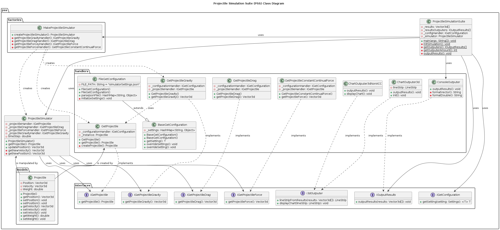

The simulator should be designed with the following requirements:
csv format that is easily interpreted by common analysis and visualization tools such as matplotlib and seaborn.
For effective testing of the simulator, ensuring the robustness and reliability of the simulator the following test methods are used:
The simple form of our decision table:
| 1 | 2 | 3 | 4 | ||
|
C1: C2: C3: C4: |
velocity = 0? velocity.x, y < 0? rho or A or Cd <= 0? dragMagnitude > 0? |
T - - - |
T T - - |
F T T - |
F F F F |
|
A1: A2: |
Return (0,0,0) Return Drag |
X - |
X - |
X - |
- X |
| Parameter | MAX | NOM | MIN | Unit |
|---|---|---|---|---|
| Area | 500mm | 150mm | 100mm | - |
| Density (temp) | 1.582 | 1.200 | 1.092 | kg/m³ |
| Drag Coefficient (Cd) | 0.1 | 0.2 | 0.6 | - |
| Muzzle Velocity | 900 m/s | 400 m/s | 0 m/s | m/s |
| Equivalence Class | Unit |
|
Area - Small - Med - Large |
mm² 105 155 240 |
|
Density - Cold - Normal - Hot |
kg/m² 1.300 1.200 1.100 |
|
Drag Coefficient (Cd) - Average - OK - Bad |
- 0.2 0.4 0.6 |
|
Muzzle Velocity - Stationary - Slow - Fast - Very Fast |
m/s 0 200 400 700 |
#+BEGINCOMMENT
| Specifications | Solution 1 | Solution 2 |
Solution 3 ------------------- ------------------- ------------------- ------------------- ------------------- |
#+ENDCOMMENT